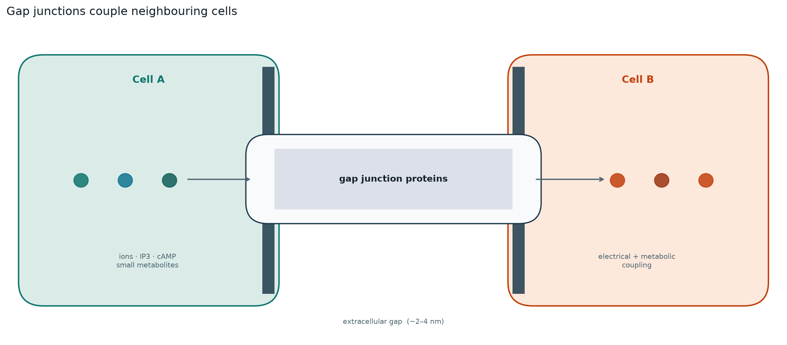
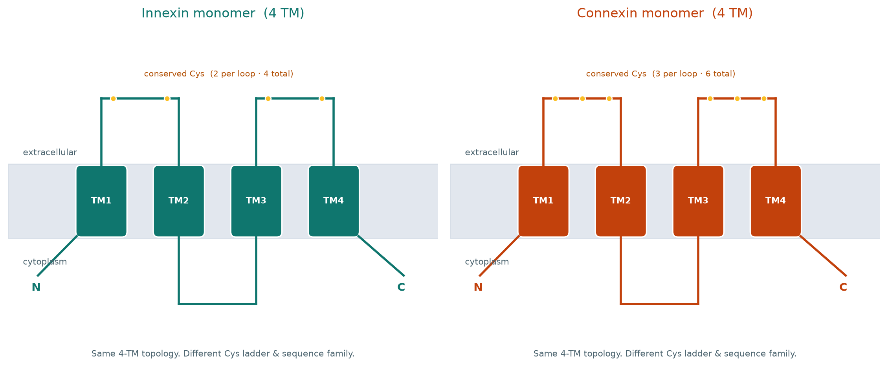
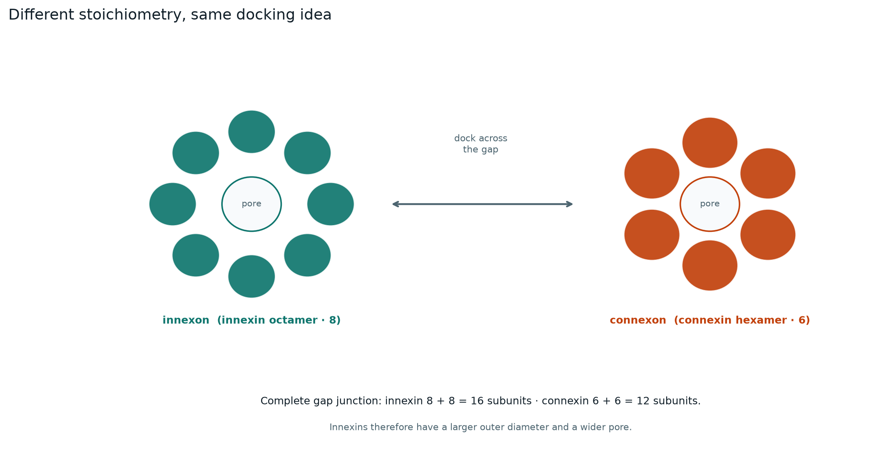
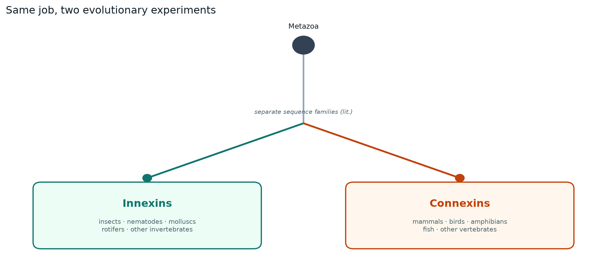
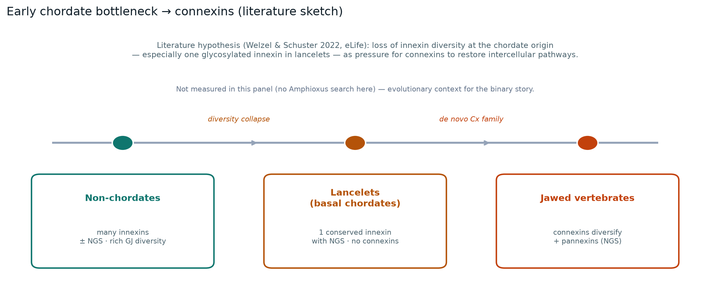

Three families, one biological job
Neighbouring cells can exchange ions and small metabolites through gap junctions. In animals this is done by three protein families: innexins (mostly invertebrates), connexins (vertebrates), and pannexins (chordate/vertebrate innexin homologs that do not form classical intercellular junctions). This project compares them with alignments, trees, synteny, and gene models.

What the channels do in the cell. The rest of this site is about the genes behind them.
Innexins and connexins look similar in membrane topology (four transmembrane helices). Literature treats them as separate gap-junction channel families; this panel tests that with sequence markers and cross-family searches. A practical check is the conserved cysteine pattern in the extracellular loops: innexins and pannexins usually have 2+2 = 4, connexins 3+3 = 6. Pannexins also keep a conserved N-X-S/T motif on those loops, which marks the non-docking innexin-lineage branch.
| Innexin | Connexin | Pannexin | |
|---|---|---|---|
| Where they live | Predominantly invertebrates | Canonical vertebrate GJ family | Chordates / vertebrates |
| Cys motif (EL1+EL2) | 2 + 2 = 4 | 3 + 3 = 6 | 2 + 2 = 4 |
| Gene model (typical) | More exons (median ~5) | Compact ORF (~2 exons) | Innexin-like |
| Forms a gap junction? | Yes | Yes | No (N-X-S/T marker) |
Structural details from cryo-EM are only background reading here. Main points on this path are the sequence patterns, the trees, and the annotation issues discussed in chapter 4.

Same rough fold idea, different Cys counts: 4 for innexin/pannexin, 6 for connexin.

Literature labels: innexon often drawn as an octamer, connexon as a hexamer.

Kingdom occupancy in this panel: innexins in invertebrates, connexins in vertebrates — not one gene renamed twice.
Literature (Welzel & Schuster 2022): lancelets apparently keep only one innexin with an N-X-S/T site and no connexins — an early chordate “innexin bottleneck” that may have left room for connexins to arise later, while the glycosylated innexin branch continued as pannexins. This panel: does not yet run a dedicated amphioxus copy-number / NGS audit; the sketch below is literature framing, not a result demonstrated here. Together: the bottleneck is a plausible bridge between innexin loss and connexin emergence, but the evidence on this site is occupancy + sequence separation, not a dated evolutionary reconstruction.

Sketch of the lancelet bottleneck idea from the literature.
Pannexin path
What pannexins are, PANX1–3, N-X-S/T, and links into the pannexin results.
Pannexin × innexin
Same MMseqs thresholds as innexin×connexin — here cross-family hits are expected.
Pannexin clade comparison
PANX1–3 counts, copy number, lengths — same shape as connexin clade pages.
Innexins: names that do not equal orthology
Innexins predominate among invertebrate gap-junction channels in this panel (exceptions exist in chordates via pannexins). We searched 51 genomes and recovered 142 present loci in 20 species (16 of those were new or previously blank). With the reference panel that is 164 loci in 28 species. Typical products are ~350–420 aa, four TM helices, and two conserved cysteines in each extracellular loop (4 per monomer). Coding-region gene models are intron-rich (panel median ~5 exons), so one locus can give several splice isoforms — familiar from Drosophila / mosquito shakB.
Named types in the panel are the Drosophila set Inx1/ogre, Inx2, Inx3, Inx4 (zpg), Inx5, Inx6, Inx7, shakB and the nematode set unc-7, unc-9, inx-2 (plus other nematode genes). Those names are labels from classical screens, not orthology claims: recovered non-insect loci most often best-hit unc-9 (39) or unc-7 (34). Orthology here is read from the tree and from synteny.
The tree does not replay “Inx1–7 + shakB” in every animal. Four subfamilies cut across gene names: SF1 shakB, SF2 ogre/Inx1, SF3 Inx3 + Inx7 + all nematode innexins, SF4 Inx2/zpg/Inx4–6. Outside insects, recovered loci look like the SF3 / nematode-like radiation. Drosophila even places Inx7 next to ogre/Inx2 on the X — genomic neighbours, phylogenetic strangers. Insect Inx2 (SF4) and nematode inx-2 (SF3) share a numerical suffix from screens but are not orthologs; the useful contrast is tree-guided SF3↔nematode synteny (SF3 panel), not name matching.
Innexin insights
Short read of the innexin tree: clade geography, identity, Drosophila architecture, embeddings.
Connexins: named classes in stable neighbourhoods
Connexins are the vertebrate gap-junction proteins. In the literature they appear after the early chordate innexin bottleneck (lancelets still lack them). This panel has 103 reference proteins plus 24 discovery loci across 38 species. Typical products are compact (~250–380 aa), four TM helices, and three conserved cysteines in each extracellular loop (6 per monomer). Unlike innexins, the coding region usually has no introns (ORF in one exon); models often still report ~2 exons because of a separate 5′ UTR exon (panel median 2).
Named types follow GJA/GJB/GJC/GJD/GJE: GJA1, GJA3, GJA4, GJA5, GJA8 (α); GJB1, GJB2, GJB3, GJB6 (β); plus GJC, GJD, GJE. GJA1 is the most widely shared α gene; mammals are the densest part of the panel. Untyped discovery sequences stay unassigned — they are not a hidden innexin-like radiation.
α (GJA), β (GJB), γ (GJC) and δ (GJD) co-occur across mammals, birds, amphibians and fish. GJA4 sits in a conserved β-cluster (GJB3–GJB5, DLGAP3, SMIM12) — a tandem-duplication array from local unequal crossing-over — while whole-genome duplications also put other paralogs on separate chromosomes (notably GJA1). Between Xenopus laevis (allotetraploid, L) and X. tropicalis (diploid) there is a chromosomal inversion around gja4: in laevis the flank kdm1a.L → tmem30b.L → zmpste24.L → smim12.L is left of gja4.L; in tropicalis that block is inverted and sits to the right of gja4. On the GJA1 microsynteny plot, empty flanks around X. laevis gja1.L look like an isolated gene but are a short scaffold or assembly gap — compare with the rich Danio neighbourhood. Within-class identity is ~57% vs ~40% between; α↔β ~46%.
Connexin insights
α/β co-occurrence, GJA4 neighbourhoods, embeddings, compact exons.
Where the panels look wrong
A few numbers in the plots look like biology until you check the gene models and the sampling. Three of them are annotation or panel artifacts. Two synteny examples below are real rearrangements.
1. δ GJD “~22 exons”
The connexin exon-by-subfamily boxplot can spike toward ~22 exons in δ (GJD). That is not a real 22-exon connexin. Connexin ORFs are usually intron-free (~2 exons once a 5′ UTR exon is counted). Automated GFF often fuses that compact ORF with intron-rich neighbours in the GJA4 neighbourhood (DLGAP3, SMIM12). Extreme exon counts need a manual look at the locus. Plot: connexin clade comparison.
2. “1-exon” innexin median (Ctenophora / non-insect Arthropoda)
Outside insects the exon-by-clade plot can show a median of exactly 1.0. Real innexins (insects, nematodes) have coding-region introns and splice isoforms (panel median ~5 exons). The flat 1-exon median mostly comes from TSA or ab initio models that report one continuous ORF when intron boundaries were never resolved. Plot: innexin clade comparison.
3. Connexin copy number ≈ 1
An early histogram gave a median of ~1 connexin locus per species. That was the UniProt / discovery slice we used (23/38 species had only one locus in that panel), not the full vertebrate repertoire. Jawed vertebrates typically have ~20–22 connexin genes (human 21; our panel human 22, mouse 20); teleosts can reach ~46 after extra WGDs. The corrected figure shows well-covered reference species against that literature band. Plot: inx × cnx · copy number.
4. Other plot traps
- Empty flanks around X. laevis gja1.L vs a rich Danio neighbourhood: short scaffold or assembly gap, not a biological gene island. GJA1 microsynteny.
- Insect Inx2 (SF4) ≠ nematode inx-2 (SF3): same numerical suffix from screens, different clades. Use SF3↔nematode synteny, not the names. SF3 panel.
5. Synteny that is biology
- Xenopus GJA4 inversion: allotetraploid X. laevis has kdm1a.L → tmem30b.L → zmpste24.L → smim12.L left of gja4.L; diploid X. tropicalis inverts that block to the right of gja4. Same neighbourhood, different orientation. The panel is also a tandem array (cx38 / gjb3 / gjb4 / gja4), unlike WGD-dispersed GJA1. GJA4 microsynteny.
- Drosophila Inx7 sits next to ogre/Inx2 on the X, but the tree puts Inx7 with nematode innexins in SF3. Cross-phylum synteny should compare Dmel Inx3/Inx7 (SF3) to nematode innexins as a group, not Inx2 vs inx-2 by name.
Innexin subfamilies in numbers
Within-subfamily identity is ~46% versus ~28% between subfamilies. SF3↔SF4 sits at ~28% — insect expansion versus nematode-like radiation. 3-mer embeddings agree (same group ~0.28 vs different ~0.05); amino-acid composition does not. Outside insects, clade × best-hit maps pile into unc-7 / unc-9 / SF3, not a full Drosophila toolkit.
Innexin insights
Clade geography, identity, embeddings, length and exons.
Connexin classes in numbers
Within-class identity ~57% versus ~40% between classes; α↔β ~46%. Embeddings split α from β more cleanly than composition. Named GJA/GJB labels transfer across vertebrate clades — unlike insect Inx1–7 names that do not transfer to nematodes.
Connexin insights
α/β co-occurrence, identity heatmaps, embeddings, gene models.
Innexin × connexin
Same axes for both families. Different kingdoms. In one 3-mer space they form two clouds (innexin↔connexin cosine −0.40). MMseqs finds no homologous alignments. Lengths differ (median 367 vs 322 aa). Gene models differ: innexins carry coding-region introns and splice isoforms; connexin ORFs are usually intron-free. Genomes differ too: tandem clusters that cut the innexin tree, versus conserved connexin neighbourhoods.

Both families in one sequence space (from the direct-contrast page).
Direct innexin × connexin
Kingdom occupancy, embeddings, homology, length, exons, copy number, neighbourhoods.
Same metrics, side by side
Within/between identity for each family on one page — not the direct contrast.
Summary
Literature: innexin- and connexin-based gap junctions are often treated as separate evolutionary solutions, with an early chordate innexin bottleneck (Welzel & Schuster 2022) preceding connexin diversification and a retained glycosylated innexin branch (pannexins). This panel: innexins diversify mainly in invertebrates; connexins appear as named vertebrate classes in stable neighbourhoods; cross-family MMseqs finds 0 hits at e≤1e-3 and ≥80 aa and the two families occupy separate clouds in sequence space. Together: parallel gap-junction toolkits — not one renamed homologous family — but the dated bottleneck → pannexin → connexin sequence is literature context, not something re-derived from these trees alone.